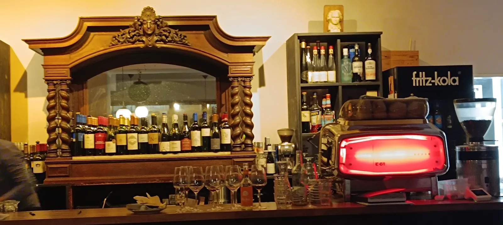
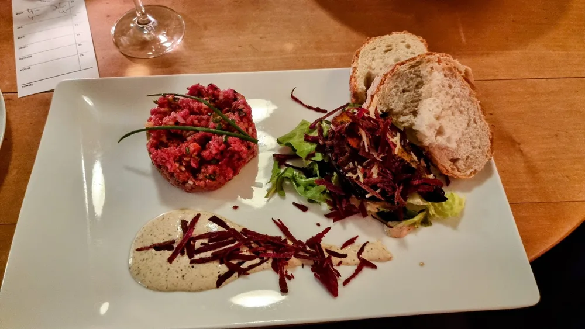
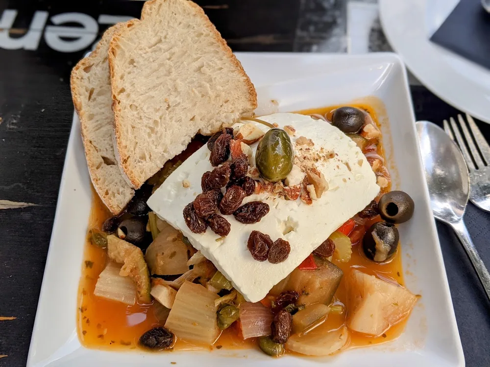
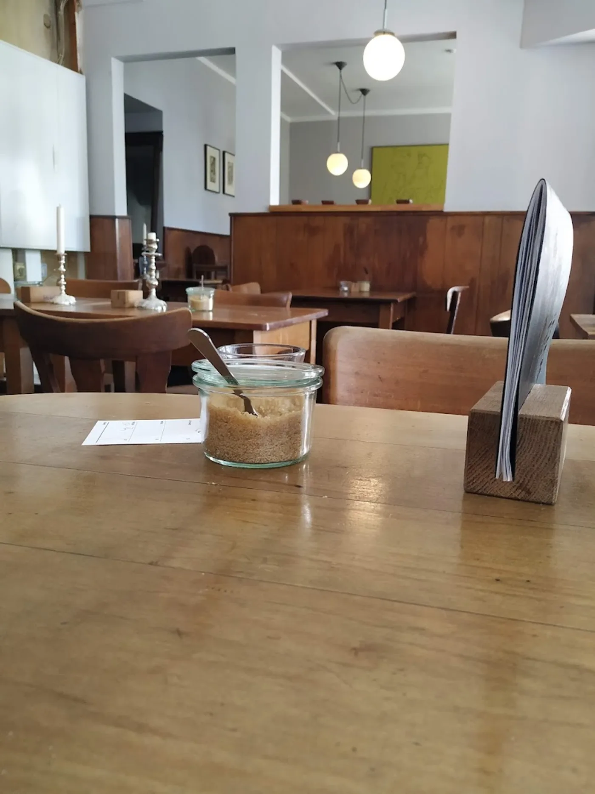
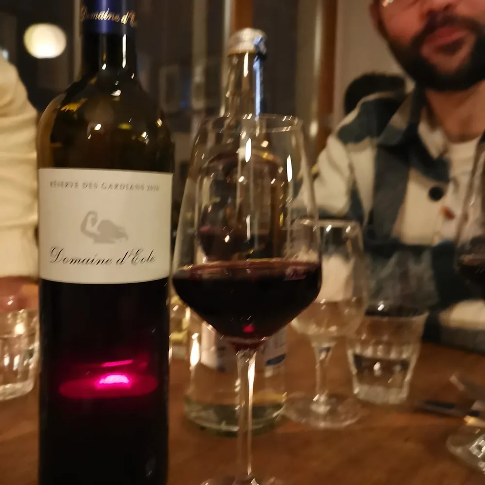
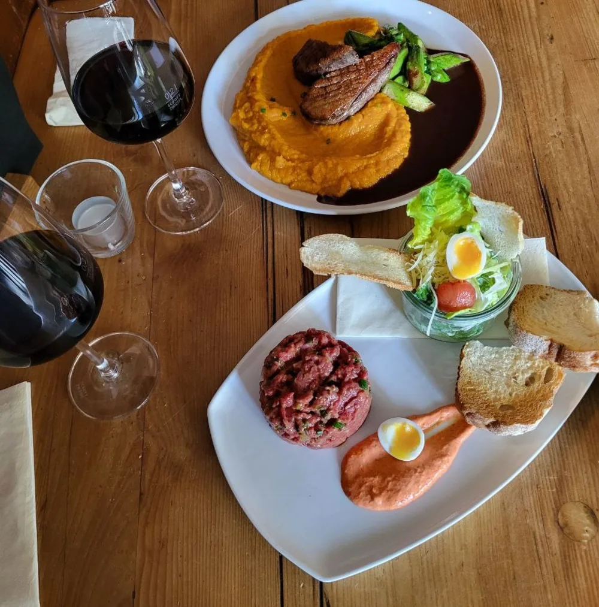

Le Chat Noir.
Französisch inspirierte Bistroküche, eine große Weinauswahl und der Charme einer Pariser Weinstube. Seit Jahren von Olaf Meier mit Leidenschaft geführt, mitten in Rüttenscheid.
Bei Olaf ist man kein Gast, sondern zu Besuch.
Klein, warm, ehrlich. Das Le Chat Noir ist eine Weinbar und ein Bistro, wie man sie in einer Pariser Seitenstraße findet. Nur eben in Rüttenscheid.
Seit Jahren führt Olaf Meier sein Lokal mit einer Leidenschaft, die man schmeckt und spürt. Die Karte ist klein und wechselt mit der Saison, die Weine sind mit Bedacht ausgewählt, und der Gastgeber nimmt sich Zeit für eine Empfehlung, ein Gespräch, einen guten Rat.
Viel Holz, Kerzenlicht und ein alter, geschnitzter Weintresen. Hier sitzt man eng, gut und gern ein wenig länger.
Der Charme einer Weinstube.
Ein geschnitzter Tresen voller Flaschen, warmes Licht, das rote Leuchten über der Bar. Rustikal wie eine elsässische Winstub, lebendig wie ein guter Abend unter Freunden.
Über hundert Weine warten darauf, entdeckt zu werden, viele davon glasweise. Dazu kommen wechselnde Anlässe, die aus dem Lokal mehr machen als ein Restaurant: Live-Musik, Weinseminare und kleine Kunstausstellungen an den Wänden.
An lauen Abenden lädt die Terrasse in der ruhigen Seitenstraße zum Verweilen ein.
Kleine Karte, große Sorgfalt.
Französisch inspiriert, saisonal und frisch. Was heute auf der Karte steht, entscheiden Markt und Laune des Küchenchefs. Eine Auswahl, die immer wieder wechselt:
Gäste über das Le Chat Noir.
Schönes, kleines Bistro mit französischer Atmosphäre, das von Olaf mit Leidenschaft betrieben wird. Hier gibt es immer hervorragende Weine.
Schöne kleine Location mit französischem Flair, gutem Essen und fantastischen Weinen. Herr Meier und sein Team sind immer freundlich und zuvorkommend.
Immer wieder schön bei Olaf. Schönes, schlichtes Ambiente, super Wein und einfach nette Leute. Freitagabends gucken die Füße raus, aber das hat einen guten Grund.
Große Auswahl an ausgezeichneten Weinen in gemütlicher Atmosphäre. Die Preise sind fair, das Personal sehr freundlich. An lauen Sommerabenden ein Traum.
Exzellente Küche mit erfrischenden Twists. Das Tatar war ein Traum, das geröstete Brot und die Creme ein Gaumenschmaus. Auch die Ente hat sehr überzeugt.
Ein richtig netter Ort in Essen. Schlicht, aber durch viel Holz sehr gemütlich. Kleine Karte, aber immer alles lecker und frisch. Sehr gerne wieder.
Ein Abend in Bildern.
Der Tresen, die Teller, das Licht. Ein paar Eindrücke aus dem Le Chat Noir.






Wir freuen uns auf Sie.
Am schönsten geht die Reservierung mit einem kurzen Anruf. Die Karte ist klein, die Plätze sind es auch, ein Tisch vorab lohnt sich also.
0201 792951